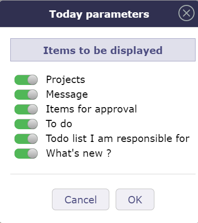
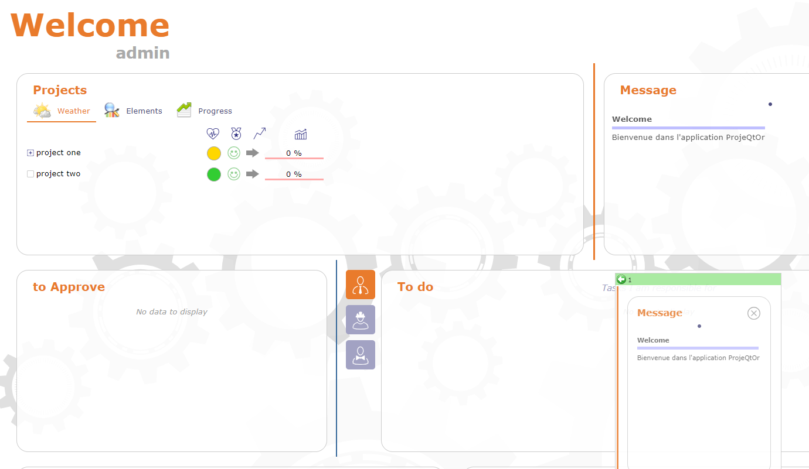
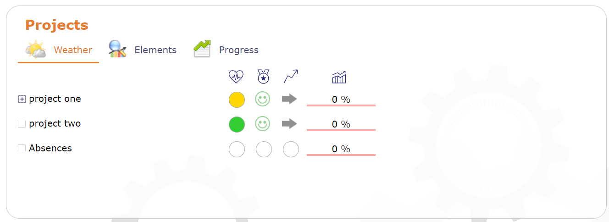
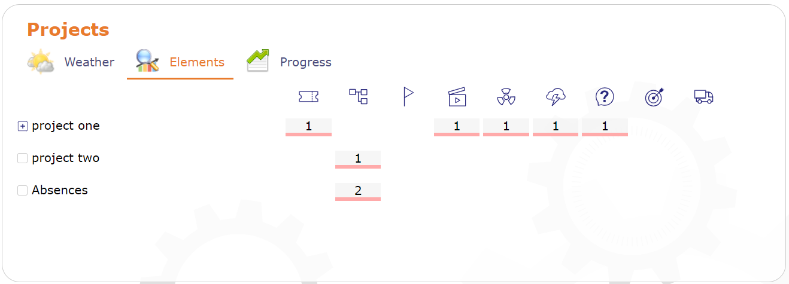
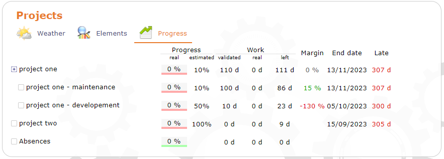
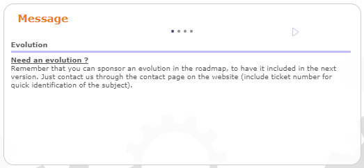
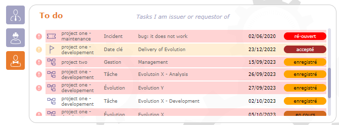
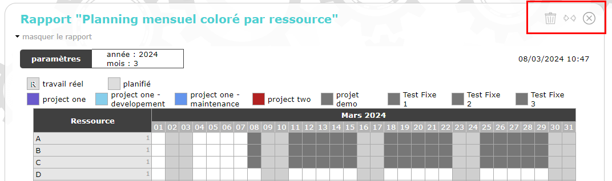

Aujourd’hui (Tableau de bord)¶

Vue globale de l’écran Aujourd’hui¶
Cet écran permet à l’utilisateur d’avoir une vue d’ensemble des projets et des tâches sur lesquels il travaille.
Ses projets, les tâches auxquelles l’utilisateur est affecté, celles dont il est responsable ainsi que les diverses tâches créées par lui-même ou pour lesquelles il est demandeur sont listées dans différentes sections.
Chaque liste peut donc contenir différents types de tâches. L’utilisateur peut donc voir des activités, des questions, des décisions, des tickets, des risques, des réunions, des jalons… ainsi que des éléments financiers, comme des devis, des factures ou des contrats.
C’est le paramètre utilisateur « Première page » par défaut. Ce paramètre définit l’écran qui sera affiché en premier à chaque connexion.
La définition de la visibilité est basée sur les droits d’accès de chaque utilisateur
Paramètres
Cliquez sur
 pour accéder aux paramètres de l’écran.
pour accéder aux paramètres de l’écran.

Boîte de dialogue - Paramètres Aujourd’hui¶
Permet de définir les sections affichées à l’écran.
vous pouvez directement cliquer sur en haut à droite de la section pour la fermer
{kind=link}
Pour modifier l’ordre des blocs affichés, cliquez et faites glisser les blocs vers l’emplacement souhaité.

Déplacer une section¶
Si le déplacement est autorisé, l’en-tête est vert, sinon il est rouge.
Projets¶
Cette section vous permet de voir les projets en cours sur lesquels vous avez des droits de visibilité.
Plusieurs sections sont disponibles : la météo des projets, les éléments qui les composent et la progression de chacun.
La liste des projets est limitée à la portée de visibilité des projets de l’utilisateur connecté.
Des icônes apparaissent en haut à droite permettant de fermer le bloc ou de le passer en plein écran.
Le nombre de projets affichés peut être défini dans les paramètres globaux.
Cliquer sur le nom d’un projet permet de s’y rendre directement.
Météo¶
La météo est saisie manuellement sur chaque projet.

Météo des projets¶
État de santé
Cette icône permet d’afficher l’état de santé du projet.
Niveau de qualité
Un indicateur manuel peut être défini sur le projet.
Cette icône permet d’afficher la qualité du projet.
Tendance
Un indicateur manuel peut être défini sur le projet.
Les indicateurs de tendance sont affichés.
Cette icône permet d’afficher la tendance du projet.
Avancement global
Avancement réel du travail du projet et avancement supplémentaire sélectionné manuellement pour le projet
Éléments concernant le projet¶

Éléments des projets¶
Les nombres d’éléments concernant un projet sont affichés.
Avancement calculé et global¶

Avancement des projets¶
Avancement réel du travail du projet et avancement supplémentaire sélectionné manuellement pour le projet.
Au survol de la barre.

Avancement calculé¶
Sur chaque projet, affiche la partie « à faire » (rouge) comparée à « terminé et clos » (vert).
Avancement
Réel : Avancement du projet basé sur le temps de travail réel des ressources.
Estimé : Avancement du projet basé sur les valeurs définies manuellement pour une estimation.
Travail
Valider : valider le travail sur le projet
Réel : travail réel sur le projet
Restant : travail restant sur le projet.
Autre
Marge : la marge correspond à la différence de travail entre le révisé et le validé.
Date de fin : Date de fin planifiée du projet.
Retard : Nombre de jours de retard dans le projet.
Message¶
Tous les messages planifiés seront affichés dans cette section.

Section Message¶
Chaque point correspond à un message différent.
Voir aussi
À approuver¶
Vous pouvez définir des approbateurs pour un document, un courrier entrant ou sortant.

Élément à approuver¶
Seuls les utilisateurs affectés au projet lié à l’élément à approuver peuvent être ajoutés.
Si vous êtes dans la liste des approbateurs, vous verrez la liste des éléments que vous devez approuver.
La liste des éléments est cliquable.
Voir aussi
À faire : Liste des tâches¶
La liste des tâches est divisée en 3 parties, cliquez sur les boutons respectifs pour afficher la liste :

Liste des tâches¶
les tâches dont je suis responsable,
{kind=link}
 les tâches qui me sont affectées et enfin
les tâches qui me sont affectées et enfin
 les tâches dont je suis l”émetteur ou le demandeur
les tâches dont je suis l”émetteur ou le demandeur
Note
Paramètre Nombre maximum d’éléments à afficher
Le nombre d’éléments listés ici est limité à une valeur définie dans les Paramètres globaux et les Paramètres utilisateur
Saisissez le nombre de projets ou de tâches à afficher sur l’écran.
Quoi de neuf : le flux d’activité¶
Vous avez accès au flux d’activité des éléments que vous voyez affichés conformément aux droits de votre profil.
Voir aussi
Liste des tâches¶
Dans cette section, vous voyez les listes de tâches actuelles sur lesquelles vous avez des droits
Voir aussi
Rapports¶
Vous pouvez sélectionner n’importe quel rapport à afficher sur l’écran Aujourd’hui.

Rapports sur Aujourd’hui¶
Cliquez sur
 depuis la fenêtre de l’écran aujourd’hui ou dans les paramètres de l’écran.
depuis la fenêtre de l’écran aujourd’hui ou dans les paramètres de l’écran.Cliquez sur
 pour réduire la zone d’affichage du rapport à la moitié de la largeur de l’écran.
pour réduire la zone d’affichage du rapport à la moitié de la largeur de l’écran.Cliquez sur
 pour étendre la zone d’affichage du rapport à toute la largeur de l’écran.
pour étendre la zone d’affichage du rapport à toute la largeur de l’écran.

Paramètres d’affichage sur aujourd’hui¶
Ajouter le rapport sélectionné
Pour ce faire, il suffit d’aller au rapport sélectionné, de sélectionner les paramètres et d’afficher le résultat (pour vérifier que c’est ce que vous souhaitez sur l’écran d’aujourd’hui).
Cliquez sur
 pour insérer ce rapport avec les paramètres sur l’écran Aujourd’hui.
pour insérer ce rapport avec les paramètres sur l’écran Aujourd’hui.Tout paramètre non modifié sera défini comme valeur par défaut.
Ces rapports seront affichés sur l’écran Aujourd’hui comme les autres parties prédéfinies.
Voir aussi